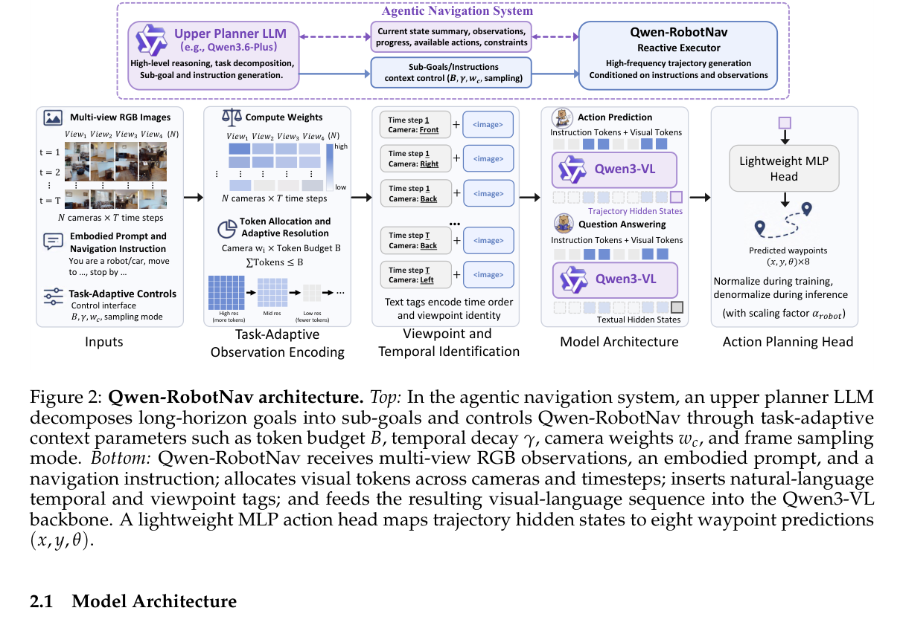

Paper Reading · Robotics World Models
Qwen-RobotNav：把导航模型做成可配置的 agent 工具
这篇报告的核心不是“又训练了一个 VLN 模型”，而是把导航模型做成一个可以被上层 agent 调参调用的 reactive waypoint executor：上层负责拆任务、选模式、控制视觉上下文；Qwen-RobotNav 负责把当前指令和多视角历史变成 8 个 waypoint。
0. 一句话结论
痛点：导航任务的视觉历史会无限增长，不同任务又需要不同历史策略：VLN 要记路标，ObjNav 要覆盖探索，Tracking 要高分辨率最近帧，驾驶要短期轨迹惯性。 核心招：Qwen-RobotNav 在 Qwen3-VL 上加轻量 waypoint head，并暴露 token budget \(B\)、时间衰减 \(\gamma\)、相机权重 \(w_c\)、frame sampling mode 等可控观察编码接口。 效果：8B panoramic 在 VLN-CE R2R/RxR 达到 72.1%/76.5% SR；EVT-Bench tracking rate 约 90%；NAVSIM PDMS 最高 91.4；接入 Qwen3.6-Plus agent 后，EQA 指标刷新 SOTA。 代价：它仍是行为克隆式 waypoint executor，不是显式地图/可证明规划器；token 分配是经验启发式；agentic 系统的收益部分来自上层 planner 和工具链。
- 这篇到底在解决什么
- 解决“导航模型怎么在长程任务里被 agent 稳定调用”的接口问题。模型不是一次性吃完整 episode，而是在每次调用时用可控观察编码生成局部轨迹。
- 核心 insight
- 导航泛化很大一部分不是 action head 问题，而是 observation context modeling 问题。把视觉 token 怎么分给时间、相机、历史覆盖显式暴露出来，比只固定一个采样窗口更像可组合工具。
- 代码状态
- 报告给出
https://github.com/QwenLM/Qwen-RobotNav，但 2026-06-17 直接访问返回 404。下面的实现解读基于技术报告，不把未发布代码当作事实。

1. 论文定位
Qwen-RobotNav 属于 vision-language navigation foundation model，覆盖 VLN、PointNav、ObjNav、active visual tracking、EQA 里的导航执行，以及 autonomous driving trajectory planning。 它和专门 VLN 模型的差异是：不把任务绑定到单一 benchmark，不把 observation 策略写死，而是把不同导航行为统一成未来 waypoint trajectory prediction。
| 路线 | 典型做法 | 瓶颈 | Qwen-RobotNav 的差异 |
|---|---|---|---|
| VLN specialist | 固定相机/固定历史，预测下一步或动作 token | 换任务、换机器人、换上下文策略会脆 | 统一预测 8 个 \((x,y,\theta)\) waypoint |
| 固定窗口 VLA | 保留最近几帧 | ObjNav 和长程 VLN 会丢掉早期线索 | \(B,\gamma,w_c,m\) 显式控制历史覆盖和最近帧分辨率 |
| LLM agent + tools | LLM 负责规划，工具负责检测/记忆 | LLM 不擅长高频连续控制 | planner 只选子目标和上下文，低层轨迹交给 Nav executor |
2. 方法总览
整体 pipeline 可以压缩成六步：
instruction + embodiment prompt + multi-view RGB history
-> sample frames with mode m
-> allocate visual token budget by temporal weight omega_t and camera weight w_c
-> resize each image and encode with Qwen3-VL vision encoder
-> interleave natural-language tags: "Time step t / Camera: Front / <image>"
-> Qwen3-VL language backbone
-> 4-layer MLP action head
-> W = [(x_1,y_1,theta_1), ..., (x_8,y_8,theta_8)]
文字版模块图：
Upper Planner LLM -> task mode tau_i + subgoal L_i + config Phi_i -> Qwen-RobotNav -> waypoint W_i -> environment rollout -> trajectory evidence -> planner notebook。
关键张量可以理解为：视觉输入 \(I_{1:T}^{1:N}\in\mathbb{R}^{T\times N\times H\times W\times 3}\)，输出轨迹 \(W\in\mathbb{R}^{8\times 3}\)，action head 输入是 LLM 最后 hidden state \(E_A\in\mathbb{R}^d\)。
3. 关键创新点
3.1 Task-adaptive observation encoding
旧方法为什么不行：统一滑窗或均匀采样会把所有任务压成同一种视觉记忆策略。Tracking 需要最近帧高分辨率，VLN 需要历史路标，ObjNav 需要搜索覆盖，驾驶需要短期轨迹连续性。
它怎么改：对每个 timestep 和 camera 算权重，再在总预算 \(B\) 下分配视觉 token。时间权重为 \[ \omega_t=\exp\left(\gamma\frac{t}{T'-1}\right), \quad W[t,c]=\omega_t w_c . \] 每个图像先拿 \(b_{\min}\)，剩余预算按 \(W[t,c]\) 分配，超过 \(b_{\max}\) 的部分再迭代重分配。
为什么有效：它把“看多久”和“看多清楚”变成外部可控变量。大 \(B\) 保留更多空间细节，大 \(\gamma\) 强化最近帧，前向相机较高 \(w_c\) 保证可行动线索优先进入上下文。
代价/限制：这是经验启发式，不是基于不确定性、地图信息或任务价值的最优 token 分配。报告也承认未来可用更 principled 的 token allocation。
3.2 自然语言 time/camera tags
旧方法为什么不行：多相机多时间视觉 token 进入 LLM 后，如果没有身份标识，模型很难知道某个 token 来自“前视 t=7”还是“左视 t=2”。
它怎么改：不改架构，只在图像 token 前插入普通文本标签，例如 Time step 1 Camera: Front <image>。
这利用了 Qwen3-VL 已有的语言空间，让“front / left / back”本身携带空间语义。
代价/限制：文本标签会消耗少量 context，并且语义依赖预训练语言知识。它不是严格几何编码，因此无法替代相机标定、位姿图或 3D map。
3.3 Agent-facing navigation interface
旧方法为什么不行：很多导航模型只返回动作或轨迹，上层 agent 很难知道“我刚才搜了哪里、看到了什么、为什么失败”，长程任务很快被原始视觉流塞满上下文。
它怎么改：每次调用写成 \(W_i=\text{nav\_qwennav}(L_i,\tau_i,\Phi_i)\)，其中 \(\tau_i\) 是 VLN/PointNav/ObjNav/Tracking 等模式，\(\Phi_i=(B,\gamma,\{w_c\},m,b_{\min},b_{\max})\) 是观察配置。执行后，harness 生成 trajectory evidence 和 evidence notebook，而不是把完整 rollout 丢回 planner。
为什么有效：上层 LLM 负责慢速推理和子目标选择，Nav 模型负责高速 waypoint 生成。上下文压缩让 planner 能做长程搜索和 EQA，而不是被低层帧流淹没。
4. 训练和推理流程
| 阶段 | 输入 | 输出 | 关键处理 |
|---|---|---|---|
| 训练 | 多视角历史、指令、embodiment prompt、GT waypoint | \(\hat W\in\mathbb{R}^{8\times3}\) | 随机采样 \(B,\gamma,w_c,b_{\min},b_{\max}\)，trajectory MSE + VL next-token loss |
| 单模型推理 | 当前任务模式、历史帧、观察配置 | 8 个 waypoint | action head 输出先 denormalize，再由低层控制器执行 |
| agentic 推理 | 上层子目标、工具证据、notebook | 导航调用、视觉工具调用、最终回答 | planner 动态切换 VLN/ObjNav/Tracking，并压缩 rollout 为证据记录 |
训练数据是 85% navigation trajectory planning + 15% navigation-related VL reasoning。后者很重要：报告认为只用轨迹数据会让 Qwen3-VL 退化成 reactive action mapper，丢掉开放世界视觉语言能力。
5. 公式和算法逐项解释
5.1 Waypoint 输出
每个 waypoint 是机器人局部 ground plane 上的二维位置和朝向，action head 输出 24 维。实现上就是把某个 trajectory hidden state 送进 4 层 MLP，训练时按数据集 99th percentile scale factor normalize 到 \([-1,1]\)，推理时再 denormalize。
5.2 Temporal decay
\(t=0\) 是最旧帧，\(t=T'-1\) 是最新帧。若 \(\gamma=2\)，最新帧拿到的时间权重约为最旧帧的 \(e^2\approx7.4\) 倍。实现上这只影响 image resize 前的 token allocation。
5.3 Camera-time joint weight
\(w_c\) 是相机重要性，报告示例为 front/right/back/left = \([2.0,1.0,0.5,1.0]\)。这意味着同一时间的前视图会比后视图拿更多 token，因为前视更常包含障碍、目标、可通行路径。
5.4 Composite loss
\(\mathcal{L}_{traj}\) 只在导航轨迹样本上激活，\(\mathcal{L}_{VL}\) 是标准 next-token prediction。报告设置 \(\lambda=1.0\)。它不是先冻住 VLM 再训练 head，而是从 Qwen3-VL 初始化后端到端微调。
6. 训练和推理细节对齐
- 观察配置：训练时 \(B\sim U[2048,4096]\)、\(\gamma\sim U[1,3]\)、frame mode 在 random/latest 间切换；推理时 agent 可以选择配置。这里训练和推理是对齐的，因为配置本来就是训练变量。
- 历史长度：训练时通过 teacher forcing 从 GT trajectory unroll 出历史；推理时历史来自自己执行的 rollout。这里仍有 distribution shift，尤其是错误累积后看到的场景分布会偏离 teacher-forced 数据。
- 动作执行：模型输出 waypoint，不直接控制电机。低层控制器、速度限制和碰撞处理会影响最终成功率，论文的仿真和真实部署都包含这层系统因素。
- EQA 场景：EQA 分数不是单模型能力，包含上层 planner、视觉工具、evidence notebook 和回答模型。博客里的 EQA 数字应解读为系统结果。
7. 实验复盘
| 任务 | 关键结果 | 怎么读 |
|---|---|---|
| VLN-CE | 8B panoramic: R2R SR 72.1, RxR SR 76.5 | 说明长程语言指令和多视角历史确实收益明显；RxR 的增益尤其大。 |
| VLNVerse | 8B fine/coarse SR 63.75 / 46.59 | coarse instruction 仍难，模型能推中间路点但远未饱和。 |
| ObjectNav | 4B 在 MP3D SR 52.2，HM3D SR 75.6 | RGB-only 能超过一些深度/里程计方法，但 SPL 不总是最好，说明搜索路径偏保守。 |
| EVT-Bench | tracking rate 约 90%，SR 约 78 | 跟得住目标，但成功判定落后专门 tracker，multi-task training 有任务折中。 |
| NAVSIM | 4B PDMS 91.4，8B PDMS 90.9 | 短期历史轨迹非常关键；无历史 prior 的变体 PDMS 约 79.5。 |
| AlpaSim | zero-shot score 0.15/0.17 | 能迁移出非零驾驶行为，但明显落后专门 Alpamayo-R1，说明“导航统一”不等于自动驾驶 SOTA。 |
批判点：VLN/ObjNav/Tracking/NAVSIM 的结果很强，但这些 benchmark 的传感器、控制器、环境交互方式不同，统一比较时容易混入系统工程差异。EQA 尤其是 agentic system 结果，不能简单归因到 Qwen-RobotNav 单体。
8. 可复现清单
- 需要 Qwen3-VL checkpoint，且报告未公开训练代码和数据 registry。
- action head 是 4 层 MLP，hidden dim 512，输出 24 维 waypoint。
- trajectory normalize 用每个数据集坐标的 99th percentile scale factor。
- 优化器 AdamW，\(\beta_1=0.9,\beta_2=0.95\)，weight decay \(10^{-2}\)，warmup 3%，backbone peak lr \(2\times10^{-5}\)。
- 必须实现动态分辨率视觉 token 分配，不能只简单 resize 到固定分辨率。
- VL co-training 不是附属项。没有它，VLM 容易退化成动作映射器。
- 【不确定】报告没有给出完整低层控制器细节。可能是 Habitat/VLN 控制器、flash controller、机器人底盘控制器各自不同；验证方式是等待代码或复现实验的 controller config。
9. 可能的改进方向
- 学习式 token allocator ->用 uncertainty 或 value-of-information 替代手工 \(\omega_t w_c\)；预期更省 token；风险是训练不稳定；实验比较固定启发式、learned allocator、oracle allocator。
- 显式 map memory ->把 evidence notebook 接 occupancy / semantic map；预期 ObjNav 路径更短；风险是系统变重；实验看 OVON SPL 和重复搜索率。
- 闭环错误恢复数据 ->收集 self-rollout failure recovery；预期减少 teacher forcing mismatch；风险是数据质量差；实验比较 DAgger、offline correction、纯 BC。
- 面向 FastWAM 的 context object ->把 \(B,\gamma,w_c,m\) 设计成 action execution object 的字段；预期 one-shot task demo 可复用观察策略；风险是接口复杂；实验做任务内配置迁移。
10. 速读备忘卡
- Qwen-RobotNav 的核心是可配置观察上下文，不只是 waypoint head。
- 所有导航行为统一成 8 个 \((x,y,\theta)\) waypoint。
- \(B\) 控制总视觉 token，\(\gamma\) 控制最近帧偏置，\(w_c\) 控制相机重要性。
- 自然语言 time/camera tags 用普通词汇解决视角和时间身份。
- 训练时随机化所有观察配置，让推理时可以由 planner 调参。
- 85% trajectory + 15% VL co-training，用来保住 Qwen3-VL 的语言和视觉 grounding。
- agentic 系统的重点是 task mode、config、trajectory evidence、notebook memory。
- VLN-CE RxR 76.5% SR 是最强信号之一，说明长程语言导航获益。
- EVT-Bench tracking rate 高但 SR 不是最高，multi-task model 有任务折中。
- AlpaSim zero-shot 仍弱，导航统一接口不能替代专门驾驶 closed-loop training。